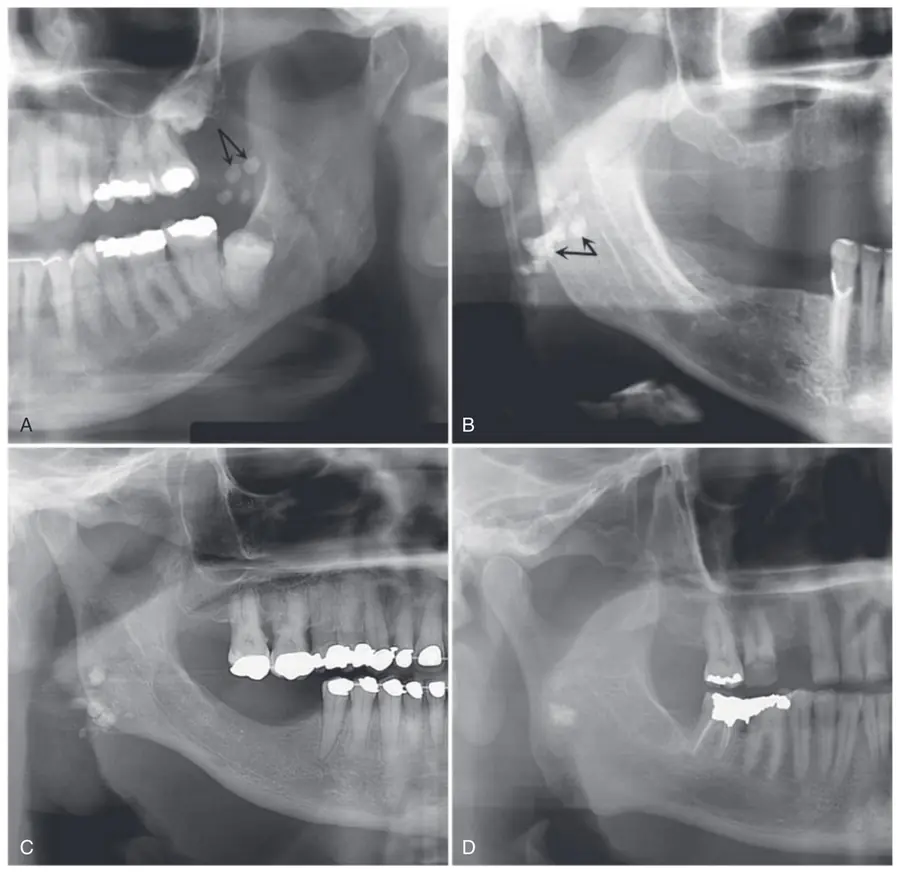

نسخه استخراجشده؛ ترجمه یا تأیید علمی انجام نشده است. وضعیت: captured
تعریف پایه: «رسوب املاح کلسیم به شکلی نامنظم در بافت نرم، کلسیفیکاسیون هتروتوپیک نامیده میشود.» و به سه دسته تقسیم میشود: کلسیفیکاسیون دیستروفیک، کلسیفیکاسیون ایدیوپاتیک (کلسینوز)، و کلسیفیکاسیون متاستاتیک. این ضایعات اغلب بیعلامتاند و بیشتر بهصورت اتفاقی در تصاویری که برای مقصود دیگری گرفته شده کشف میشوند.

۱) کلسیفیکاسیون دیستروفیک — «املاح کلسیم در محلهای التهاب مزمن یا درون بافت آسیبدیده رسوب میکنند، با وجود سطوح طبیعی کلسیم و فسفات سرم.» و شرایط موضعیاش: «فعالیت بالای فسفاتاز موضعی، افزایش pH موضعی، و شرایط بیاکسیژنی درون بافت مرده یا در حال مرگ.»
و محلهای شایعش: غدد لنفاوی، لوزهها، عضلات، گردن، گونهها، و زبان. و روی تصویر، «از دانههای رادیواوپک نقطهای بهسختی قابل درک تا ساختارهای رادیواوپک بزرگتر و نامنظم» متغیر است، و میتواند همگن یا ناهمگن باشد. محلهای شایع: کیستهای ملتهب مزمن درازمدت و بافتهای نرم.
۲) کلسیفیکاسیون ایدیوپاتیک (کلسینوز) — «از رسوب کلسیم در بافت طبیعی ناشی میشود، با وجود سطوح طبیعی کلسیم و فسفات سرم.» شامل سنگ بزاقی و فلبولیت.
۳) کلسیفیکاسیون متاستاتیک — «از وضعیتهایی ناشی میشود که سطوح کلسیم و فسفات سرم را بالا میبرند، مانند هایپرپاراتیروئیدیسم یا هایپرکلسمی بدخیمی. افزون بر آن، میتواند از غلظتهای بالای فسفات سرم در نارسایی مزمن کلیه برخیزد.» و دو ویژگیاش: «معمولاً دوطرفه و متقارن رخ میدهند، و بینهایت نادرند.»
پس قاعدهی تفکیک این سه، وضعیت کلسیم و فسفات سرم است: دیستروفیک و ایدیوپاتیک ← سرم طبیعی (تفاوتشان در سالم یا آسیبدیده بودن بافت است)، متاستاتیک ← سرم بالا.
هدف تصویربرداری: «هدف، شناسایی درست معدنی شدن و تعیین این است که آیا بررسی بیشتر و احتمالاً مداخله لازم است. بنابراین، ارزیابی دقیق و موشکافانهی تمامیت همهی تصاویر بهدستآمده، بنیادی است.»
و چرا اینقدر مهم است؟ «برخی معدنی شدنهای بافت نرم نه پایش درازمدت میخواهند نه درمان، در حالی که برخی دیگر میتوانند تهدیدکنندهی حیات باشند و مداخله بخواهند.»
و چهار معیار تفسیر — اینها را حفظ کن: «معیارهای مهمی که برای رسیدن به تفسیر درست باید در نظر گرفت، محل آناتومیک، شمار، توزیع، و شکل معدنی شدنهاست.»
و پیشنیاز معیار نخست: «تعیین محل نیازمند دانستن آناتومی بافت نرم است، مانند محلهای غدد لنفاوی، لیگامانها، رگهای خونی، غضروف، و غدد بزاقی بزرگ و مجاریشان.»
و یک عدد که نشان میدهد چرا این یونیت اهمیت دارد: «موجودیتهای رادیواوپک در بافتهای نرم شایعاند و میتوانند در حدود ۴٪ تصاویر پانورامیک یافت شوند.»
و سه تکنیک عملی مشاهده — که ارزانترین ارتقای مهارت این یونیتاند: «چون برخی معدنی شدنهای بافت نرم کممعدنیاند، حیاتی است که هنگام مرور تصاویر: نور محیطی را به کمترین برسانند، از بزرگنمایی استفاده کنند، و تنظیمات فیلتر و کنتراست را تنظیم کنند.»
و نقش تصویربرداری مقطعی: «CBCT و MDCT نمایش سهبعدی بدون بزرگنمایی، اعوجاج یا همپوشانی ارائه میدهند، که به آشکار شدن محلهای دقیق معدنی شدنها و تسهیل تشخیص کمک میکند — هرچند با دوز پرتو و هزینهی مالی بالقوه بالاتر.»
هر دو از یک فرایند میآیند: «کنکرسیونهای آهکی که در حفرهی بینی (راینولیت) یا سینوس ماگزیلاری (آنترولیت) رخ میدهند، از انباشت آهستهی املاح معدنی بینی، اشکی و التهابی مانند فسفات کلسیم، کربنات کلسیم و منیزیم دور یک هسته برمیخیزند.» و «بهندرت، کنکرسیونها در سینوس فرونتال یا سلولهای هوایی اتموئید تشکیل میشوند».
و تفاوت بنیادین در ماهیت هسته است:
و محلشان: «راینولیتها در بینی و در مئاتوس تحتانی — جایی که مسیر باریکترین است — رشد میکنند. در مقابل، آنترولیتها در آنتروم و در ناحیهی مولر مجاور کف سینوس.»
و یک عدد و یک فهرست علائم برای راینولیت: «راینولیتها تقریباً ۱۵ سال طول میکشند تا تشکیل شوند و میتوانند در آغاز بیعلامت باشند.» با بزرگ شدن: درد صورت، انسداد بینی، فرسایش سپتوم، رینورهی چرکی یا خونآلود بدبوی یکطرفه، سینوزیت، سردرد، اپیستاکسی، آنوسمی، بوی بد، و تب.
و ظاهرشان: «شکلها و اندازههای گوناگون بسته به ماهیت هسته، ولی همگی محیطهای خوشمرز دارند.» و ساختار داخلی: «مختلط رادیولوسنت و رادیواوپک بسته به ماهیت هسته، و گاهی با لامیناسیون.
گاهی همگن رادیواوپک، و گاهی فراتر از دانسیتهی استخوان اطراف.» و افتراقشان: استئوما، پولیپ کلسیفیه، اودونتوم، و کیست مژهدار جراحی. و مدیریت: ارجاع به گوش و حلق و بینی برای برداشت آندوسکوپیک، و گاهی لیتوتریپسی برای حجمکاهی راینولیتهای بزرگ.
سؤالهای این مرور سختترند و بسیاری یک محل، یک شکل یا یک عدد میدهند و میپرسند کدام تشخیص را میسازد — و کدامیک ارجاع پزشکی میخواهد.